r76 gallery · before and after
Every screen at 1920×1080 and 393×852, rendered with the same local fixtures in Chromium. Before is on the left; after is on the right. Open a picture for full resolution. This is an integration candidate for review.
Before: gameplay/bug-list-1 · 2f3865feca484223ac7d267d83a9c4828bad3078
After: codex/job-1816-r76-integration · d5695bd7979d72831be70e617ce4fad4b898d95c
No production services were contacted. External requests are blocked; the supplied local fonts are served by the capture harness. Read-only provider fixtures drive the real app screens. Loading is held before app.js. Pending completion is a fixture state. The r76 release version is intentionally still r75 on the integration branch.
Review findings and validation
Gallery scope
Before: gameplay/bug-list-1 @ 2f3865feca484223ac7d267d83a9c4828bad3078
After: codex/job-1816-r76-integration @ d5695bd7979d72831be70e617ce4fad4b898d95c
Sizes: desktop 1920x1080 and phone 393x852, DPR 1, Chromium 149, en-US.
All screens are local fixture renders. The copied gallery tools stay in /tmp/gallery. No app files or existing tests changed in JOB-1819.
Checks (each ran once on the integration head; no fixes/retries)
syntax
POS10 syntax: 355 active source files, 0 failures
contracts
POS10 selected deterministic census failed in 6/197 contract(s):
- tests/contracts/static-app-release-contracts.cjs: exit 1
- tests/contracts/final-polish-presentation.cjs: exit 1
- tests/contracts/browser-journey-emulator-switch-contracts.cjs: exit 1
- tests/contracts/v10-transfer-contracts.cjs: exit 1
- tests/contracts/v10-club-contracts.cjs: exit 1
- tests/contracts/reus-gate-startup-contracts.cjs: exit 1
ops
ℹ suites 0
ℹ pass 73
ℹ fail 0
ℹ cancelled 0
ℹ skipped 0
ℹ todo 0
ℹ duration_ms 1351.239747
budget
PASS Firestore budget contracts: 16 checks, measured reads/min 3.4 / 0.0 / 3.0 / 1.8 / 60.0 (waiting <= 5 reads/min, hidden 0, idle writes 0, partner update <= 1000 ms).
reus
AssertionError [ERR_ASSERTION]: startup gzip 37569 must stay <= 37495
at Object.<anonymous> (/workspace/fifa17-career-showdown2/tests/contracts/reus-gate-startup-contracts.cjs:29:8)
The six contract failures are inherited startup gzip size checks. This picture-only job does not change the 37,569-byte startup bundle. CE2PG could not begin the journey: the demo Auth/Firestore emulators started, but the unmodified harness failed with ENOENT for node_modules/firebase/firebase-app.js. No journey JSON, seasons, checks or reads/writes were produced. The failed run was not retried.
Not done / unsure
- home-free-limit-phone-393x852.webp: the quota notice covers soundtrack controls.
- connect-players-free-limit-phone-393x852.webp: a clipped strip of the underlying Home runtime notice leaks above the phone navigation bar after quota.
- club-phone-393x852.webp and club--confirmation-phone-393x852.webp: a large empty stadium band remains above the small manager figures; confirm intended composition.
- new-showdown-phone-393x852.webp and select-league-phone-393x852.webp: generic application header remains above artwork; confirm adopted phone design.
- rivalry / rivalry-mid-showdown, both sizes: Transfer Signings remains Unavailable; provider fixtures do not supply transfer summaries.
- Minor text/animation rendering differences remain in otherwise identical views. The comparisons JSON records every differing filename, and the PR lists all affected screen groups.
- Trophy Room MORE shows identical figures when opened by coordinate touch. The r75 label-targeted click was intercepted by its transparent checkbox; screenshots alone do not prove the label interaction fix.
- These are seeded local renders, not a completed two-device shared journey or production proof. Claude's full browser verification and publication remain outstanding.
Capture coverage
62 before/after pairs (124 WebP images): all 14 core screens, Loading, Daniel/Nik/Draw/pending Final Winner, phone HONOURS, Champion reached after published Results, season-2 Home chip/tile, mid-Showdown Standings/Rivalry, Career Statistics rivalry button, Trophy Room MORE, free-limit Home/Connect Players, club confirmation, four transfer phases and the lower Season Results review/actions area.
Capture tooling
The supplied capture.cjs imports a missing screens.cjs. Reconstructed temporary routes from repository browser audits; corrected local paths, Chromium launch, exact viewports, WebP conversion and comparison builder. A disabled r75 Standings tab is captured without forcing a click. Real optional-module loading precedes Rivalry rendering. No product source or existing test was changed. Initial temporary-harness errors were repaired before assembling the final artifact.
Home · Desktop 1920x1080
No pixel difference between before and after at this size.

Home · Desktop 1920x1080 · Shared season 2 of 3; local round still 1
Shared progression is season 2 of 3 while the stored local round remains 1. After updates the header chip; desktop also updates the Continue tile metadata.

home--season-2-of-3-desktop-1920x1080.webp

home--season-2-of-3-desktop-1920x1080.webp
Connect Players · Desktop 1920x1080
No pixel difference between before and after at this size.

connect-players-desktop-1920x1080.webp

connect-players-desktop-1920x1080.webp
New Showdown · choose seasons · Desktop 1920x1080
No pixel difference between before and after at this size.

new-showdown-desktop-1920x1080.webp

new-showdown-desktop-1920x1080.webp
Select League · Desktop 1920x1080
No pixel difference between before and after at this size.

Club · Desktop 1920x1080
No pixel difference between before and after at this size.
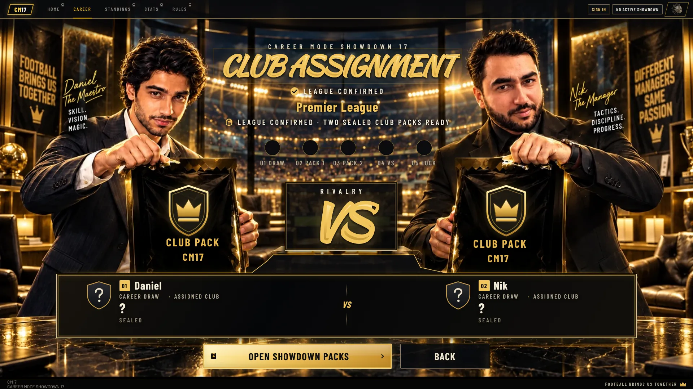
club-desktop-1920x1080.webp

club-desktop-1920x1080.webp
Club · Desktop 1920x1080 · Both clubs confirmed
No pixel difference between before and after at this size.

club--confirmation-desktop-1920x1080.webp

club--confirmation-desktop-1920x1080.webp
Transfer Challenge · Desktop 1920x1080
No pixel difference between before and after at this size.

Transfer Challenge · Desktop 1920x1080 · Guess entry (live)
No pixel difference between before and after at this size.

transfer-challenge--guess-entry-desktop-1920x1080.webp
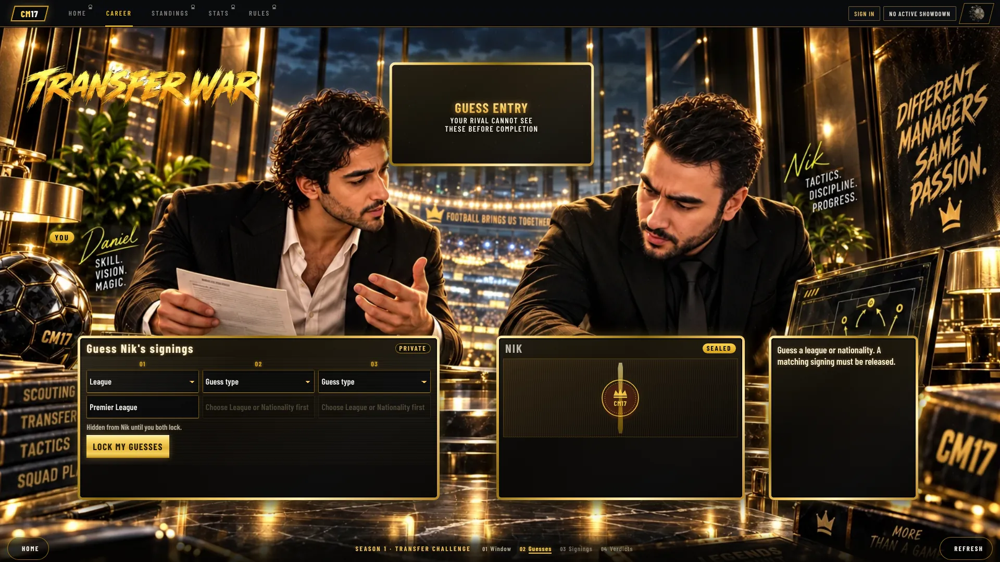
transfer-challenge--guess-entry-desktop-1920x1080.webp
Transfer Challenge · Desktop 1920x1080 · Signing entry (live)
No pixel difference between before and after at this size.

transfer-challenge--signing-entry-desktop-1920x1080.webp

transfer-challenge--signing-entry-desktop-1920x1080.webp
Transfer Challenge · Desktop 1920x1080 · Verdicts (completed)
No pixel difference between before and after at this size.

transfer-challenge--verdicts-desktop-1920x1080.webp

transfer-challenge--verdicts-desktop-1920x1080.webp
Season Results · Desktop 1920x1080
Same content and layout observed. Minor text/animation rendering pixels differ; these pictures do not establish a product change.
season-results-desktop-1920x1080.webp
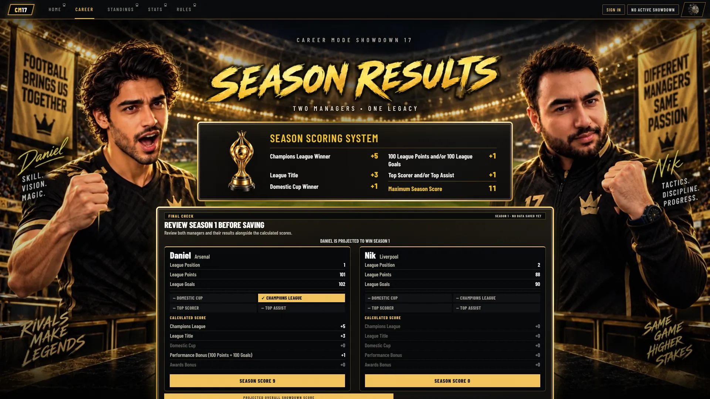
season-results-desktop-1920x1080.webp
Season Results · Desktop 1920x1080 · Review and actions · scrolled to bottom
Same content and layout observed. Minor text/animation rendering pixels differ; these pictures do not establish a product change.
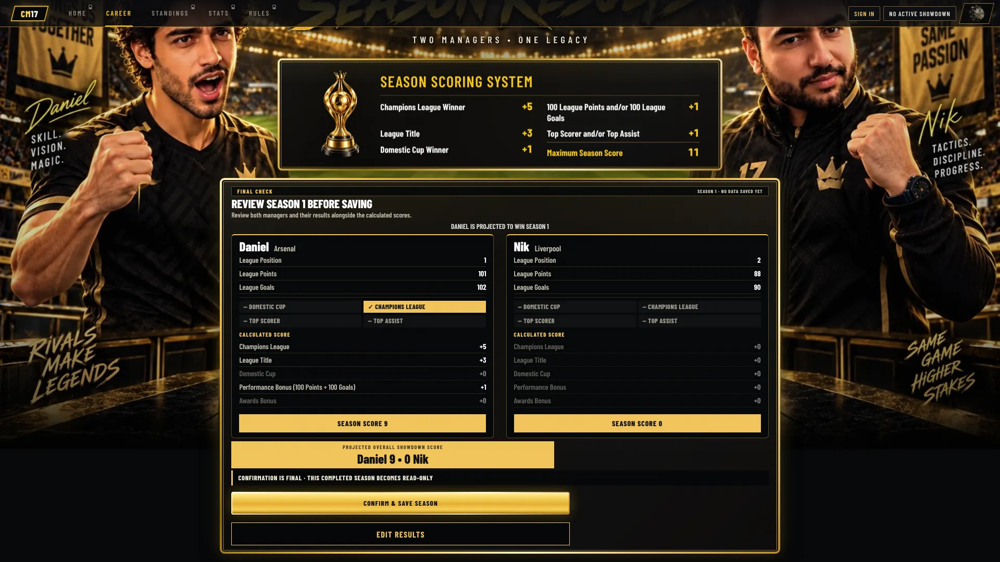
season-results--bottom-desktop-1920x1080.webp
season-results--bottom-desktop-1920x1080.webp
Standings · Desktop 1920x1080
No pixel difference between before and after at this size.

standings-desktop-1920x1080.webp
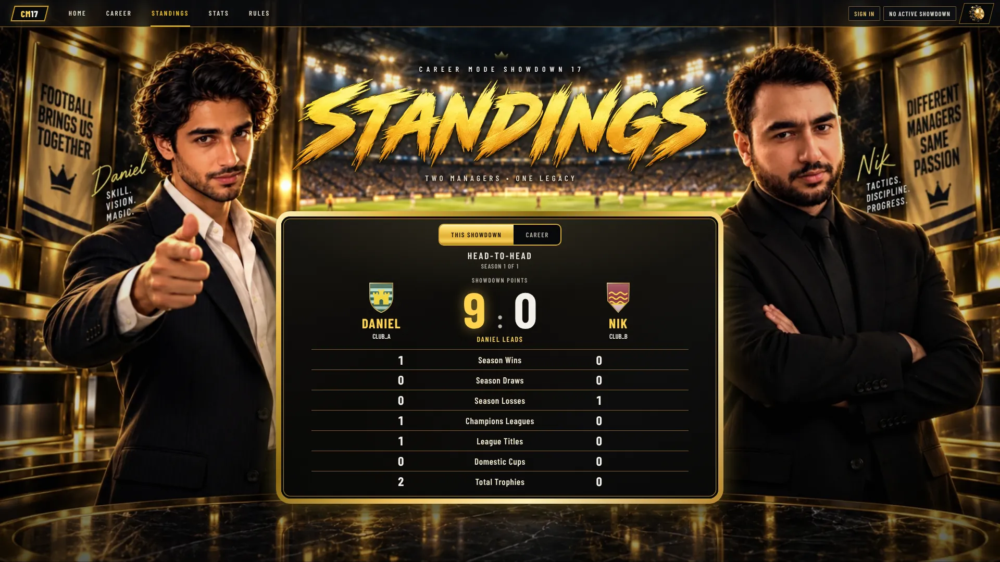
standings-desktop-1920x1080.webp
Standings · THIS SHOWDOWN mid-Showdown · Desktop 1920x1080
Before stays on Loading standings with THIS SHOWDOWN disabled. After shows the committed 6–3 score, Season 2 of 3, and all seven standings rows from the same progression fixture.

standings-mid-showdown-desktop-1920x1080.webp

standings-mid-showdown-desktop-1920x1080.webp
Final Winner · Daniel · Desktop 1920x1080
No pixel difference between before and after at this size.

final-winner-desktop-1920x1080.webp
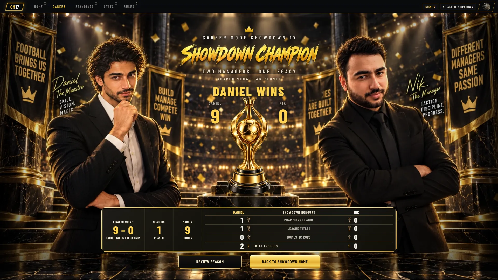
final-winner-desktop-1920x1080.webp
Final Winner · Nik · Desktop 1920x1080
No pixel difference between before and after at this size.
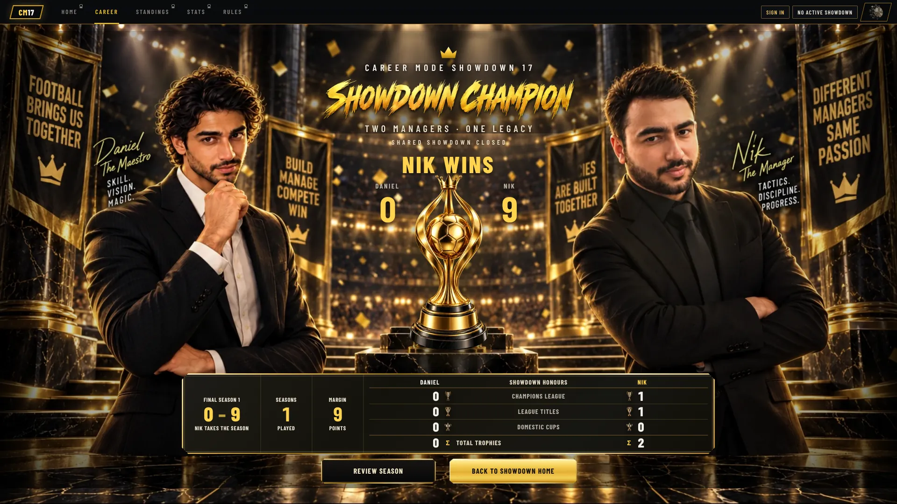
final-winner-nik-desktop-1920x1080.webp

final-winner-nik-desktop-1920x1080.webp
Final Winner · Draw · Desktop 1920x1080
No pixel difference between before and after at this size.

final-winner-draw-desktop-1920x1080.webp

final-winner-draw-desktop-1920x1080.webp
Final Winner · Completion pending · Desktop 1920x1080
No pixel difference between before and after at this size.

final-winner-pending-desktop-1920x1080.webp

final-winner-pending-desktop-1920x1080.webp
Champion · REVIEW SEASON exit · Desktop 1920x1080
This sequence first opens published Shared Results and then reaches Champion. Before hides REVIEW SEASON; after shows the exit beside BACK TO SHOWDOWN HOME.
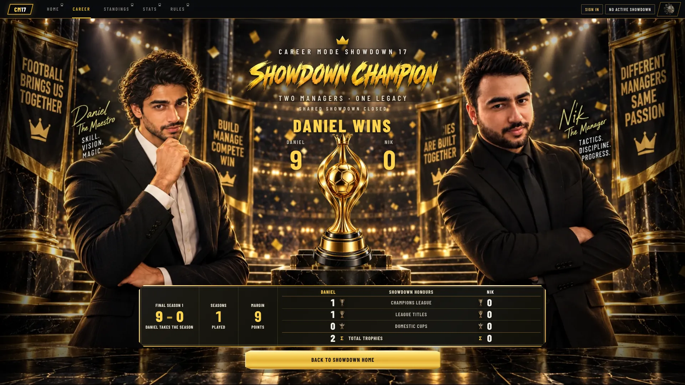
champion-review-season-desktop-1920x1080.webp

champion-review-season-desktop-1920x1080.webp
Rivalry Statistics · mid-Showdown · Desktop 1920x1080
Before stays on Loading rivalry statistics. After shows the committed 6–3 points and season counters without a cached History projection. Transfer Signings still reads Unavailable in this fixture.
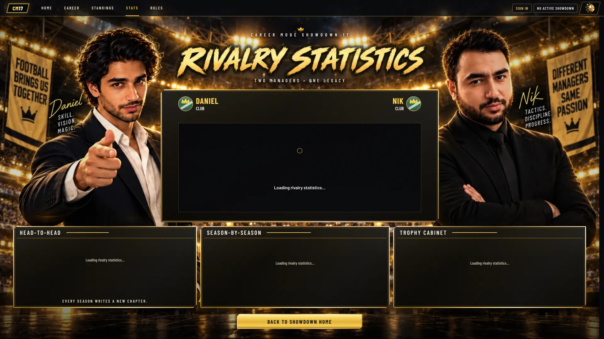
rivalry-mid-showdown-desktop-1920x1080.webp
rivalry-mid-showdown-desktop-1920x1080.webp
Rivalry Statistics · Desktop 1920x1080
Same completed 9–0 rivalry fixture and figures. Minor rendering pixels differ; Transfer Signings is Unavailable because the fixture supplies no transfer summary.
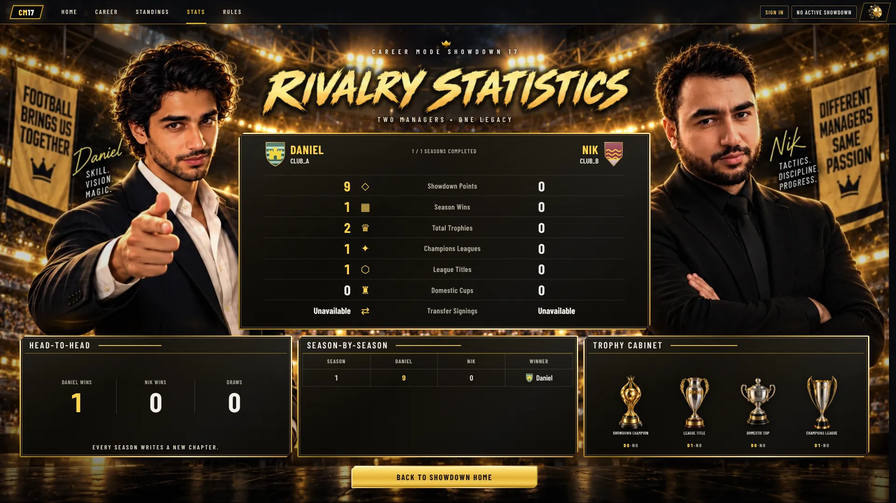
rivalry-desktop-1920x1080.webp
rivalry-desktop-1920x1080.webp
Legacy · Desktop 1920x1080
Same content and layout observed. Minor text/animation rendering pixels differ; these pictures do not establish a product change.
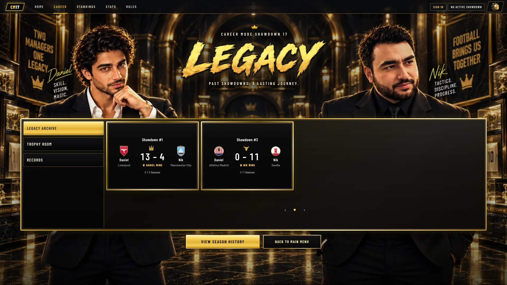
legacy-desktop-1920x1080.webp
legacy-desktop-1920x1080.webp
Trophy Room · Desktop 1920x1080
No pixel difference between before and after at this size.

trophy-room-desktop-1920x1080.webp
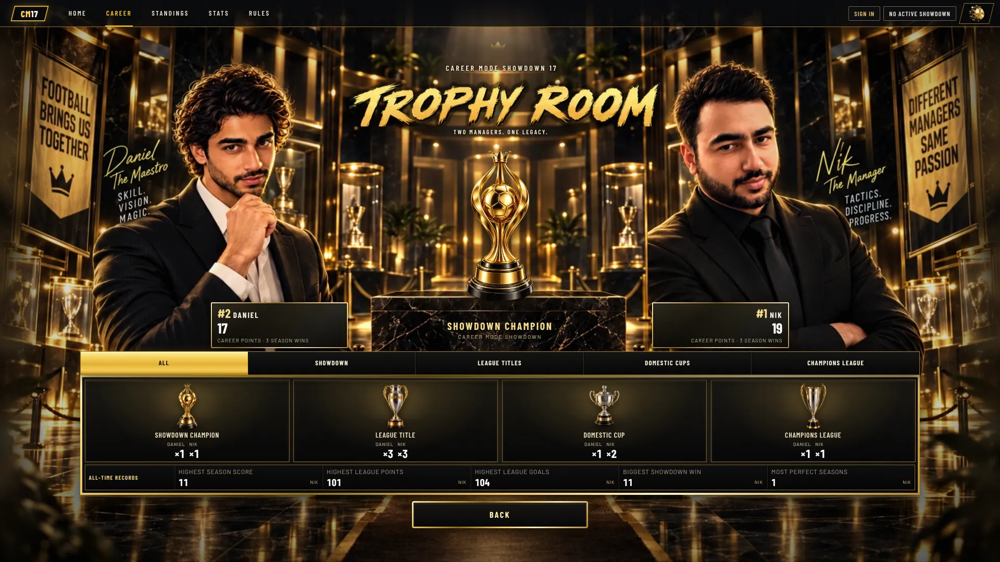
trophy-room-desktop-1920x1080.webp
Career Statistics · rivalry button · Desktop 1920x1080
After adds CURRENT RIVALRY STATISTICS for this completed-career fixture without a local active Showdown. The career figures are unchanged.

career-stats-desktop-1920x1080.webp
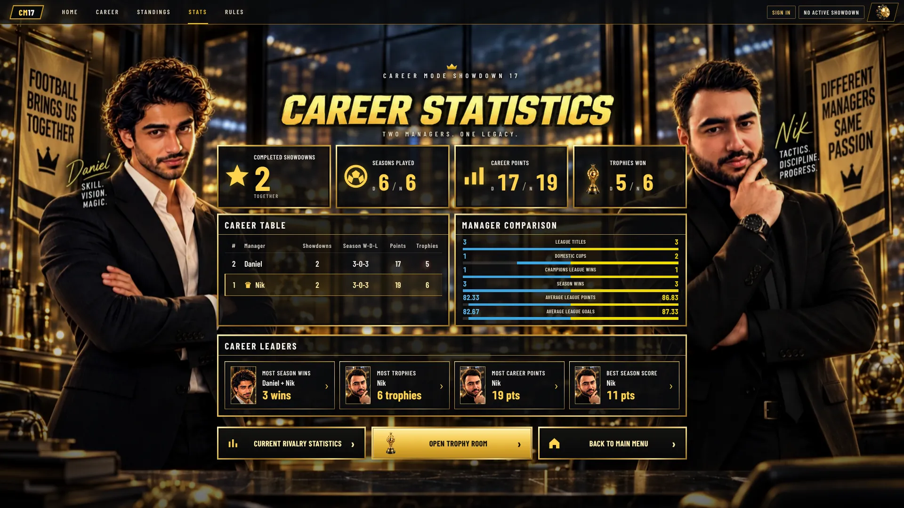
career-stats-desktop-1920x1080.webp
Rule Book · Desktop 1920x1080
No pixel difference between before and after at this size.
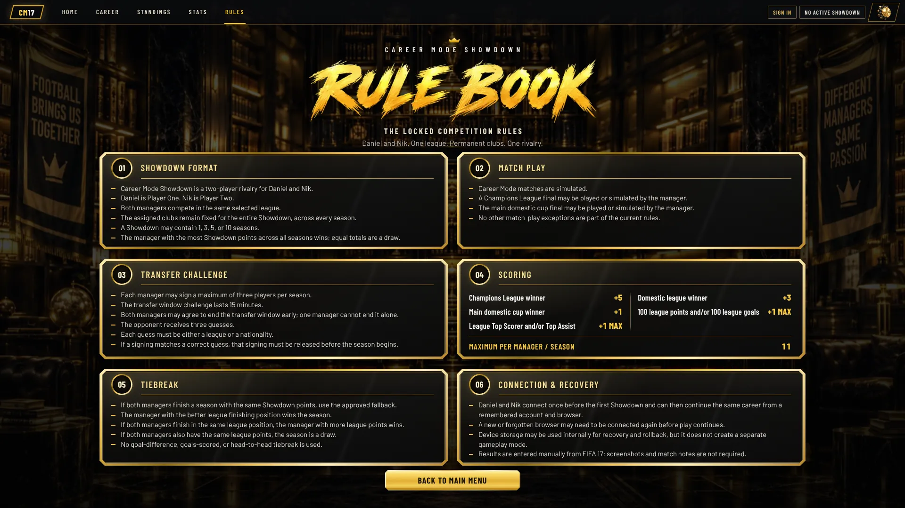
rule-book-desktop-1920x1080.webp

rule-book-desktop-1920x1080.webp
Settings · Desktop 1920x1080
Same content and layout observed. Minor text/animation rendering pixels differ; these pictures do not establish a product change.
settings-desktop-1920x1080.webp
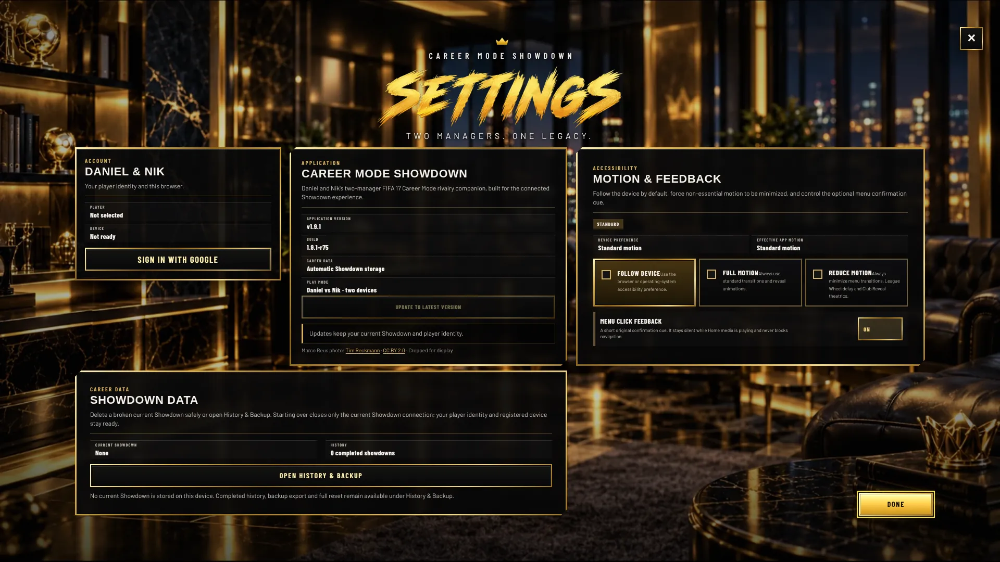
settings-desktop-1920x1080.webp
Loading · Desktop 1920x1080
Real startup splash held before app.js executes, at the requested viewport. Its blocked script request is intentional.
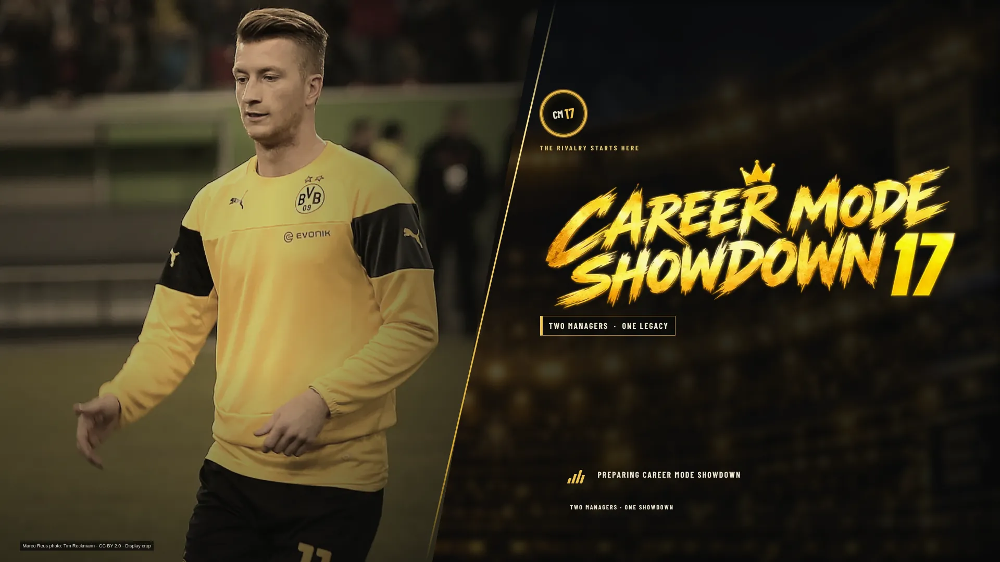
loading-desktop-1920x1080.webp

loading-desktop-1920x1080.webp
Home · free-limit message, zero taps · Desktop 1920x1080
Quota is tripped locally with zero player taps. After shows the exact free-limit line immediately. Review concern: on phone, the notice covers the soundtrack controls.
Connect Players · free-limit message · Desktop 1920x1080
The real pairing reader receives a local quota refusal and renders its free-limit message in both versions. After phone also exposes a clipped strip of the underlying Home runtime notice above the navigation bar.

connect-players-free-limit-desktop-1920x1080.webp
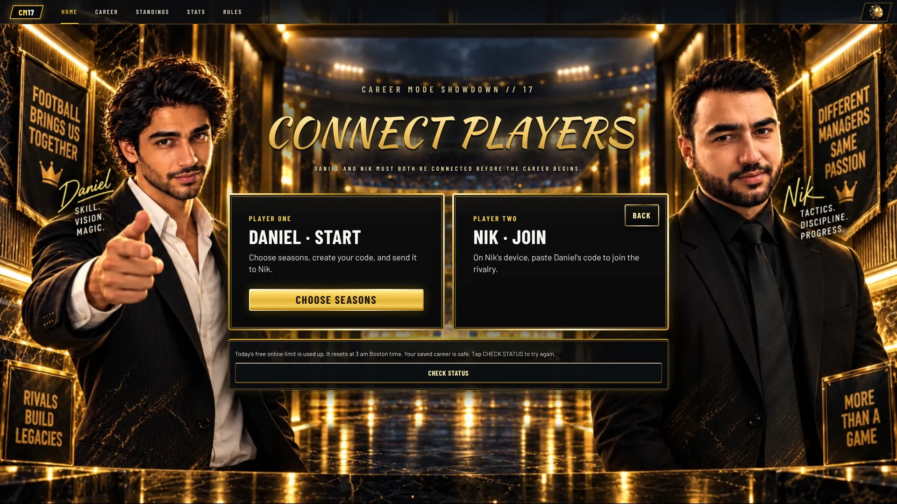
connect-players-free-limit-desktop-1920x1080.webp
Home · Phone 393x852
No pixel difference between before and after at this size.

home-phone-393x852.webp

home-phone-393x852.webp
Home · Phone 393x852 · Shared season 2 of 3; local round still 1
Shared progression is season 2 of 3 while the stored local round remains 1. After updates the header chip; desktop also updates the Continue tile metadata.
Connect Players · Phone 393x852
No pixel difference between before and after at this size.
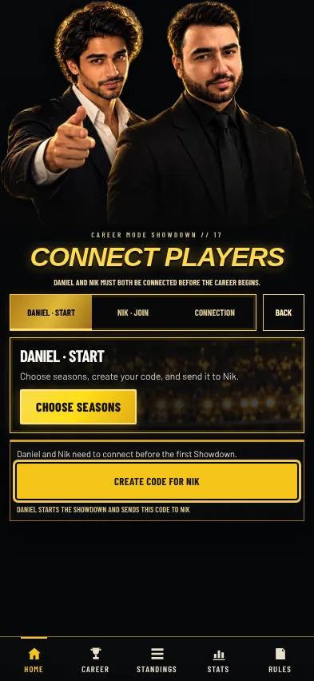
connect-players-phone-393x852.webp

connect-players-phone-393x852.webp
New Showdown · choose seasons · Phone 393x852
No pixel difference between before and after at this size. Review concern: the generic application header remains above the screen artwork; confirm this is the intended adopted phone presentation.

new-showdown-phone-393x852.webp
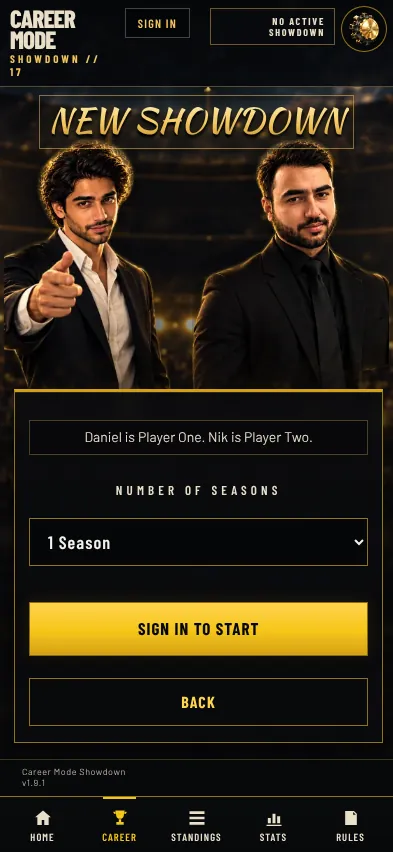
new-showdown-phone-393x852.webp
Select League · Phone 393x852
No pixel difference between before and after at this size. Review concern: the generic application header remains above the screen artwork; confirm this is the intended adopted phone presentation.

select-league-phone-393x852.webp
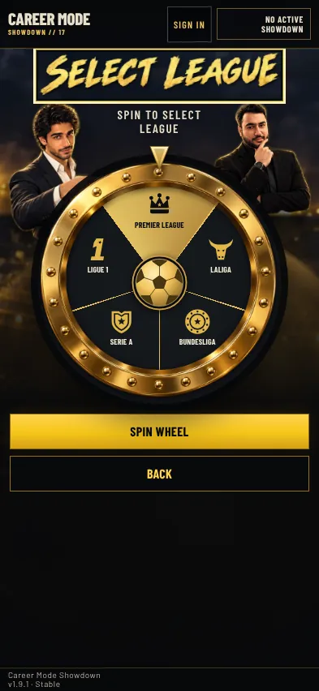
select-league-phone-393x852.webp
Club · Phone 393x852
No pixel difference between before and after at this size. Review concern: the phone composition leaves a large empty stadium band above the small manager figures.
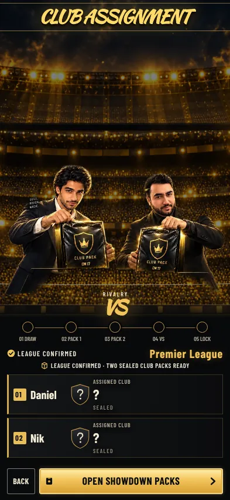
club-phone-393x852.webp

club-phone-393x852.webp
Club · Phone 393x852 · Both clubs confirmed
No pixel difference between before and after at this size. Review concern: the phone composition leaves a large empty stadium band above the small manager figures.
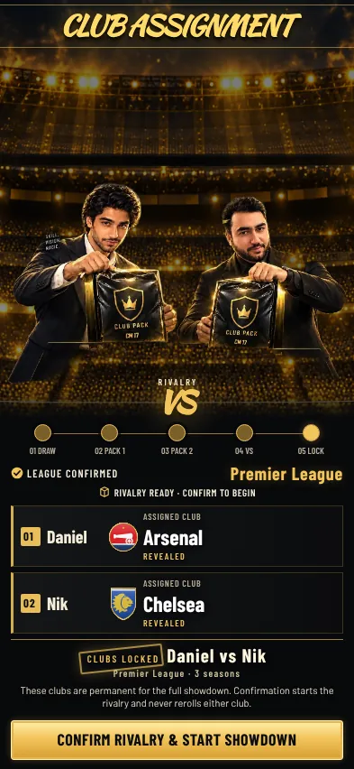
club--confirmation-phone-393x852.webp

club--confirmation-phone-393x852.webp
Transfer Challenge · Phone 393x852
Same live phase and layout; the running transfer countdown was sampled at a different instant.
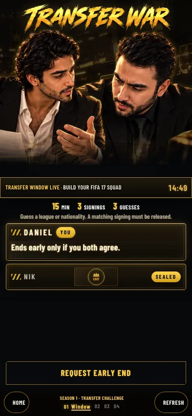
transfer-challenge-phone-393x852.webp

transfer-challenge-phone-393x852.webp
Transfer Challenge · Phone 393x852 · Guess entry (live)
No pixel difference between before and after at this size.

transfer-challenge--guess-entry-phone-393x852.webp

transfer-challenge--guess-entry-phone-393x852.webp
Transfer Challenge · Phone 393x852 · Signing entry (live)
No pixel difference between before and after at this size.
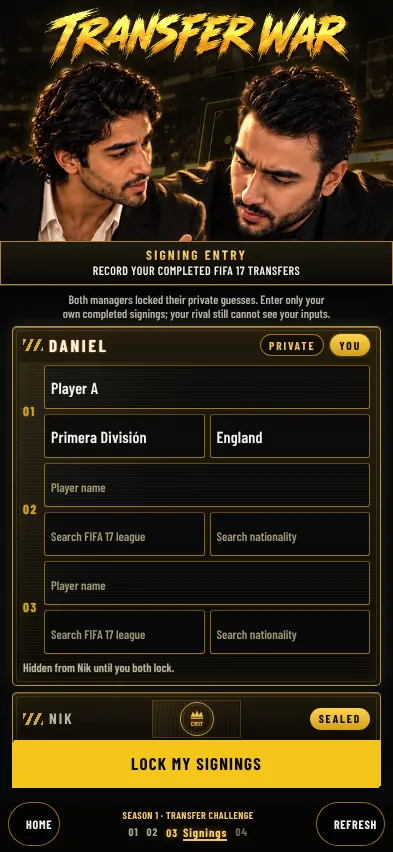
transfer-challenge--signing-entry-phone-393x852.webp

transfer-challenge--signing-entry-phone-393x852.webp
Transfer Challenge · Phone 393x852 · Verdicts (completed)
No pixel difference between before and after at this size.
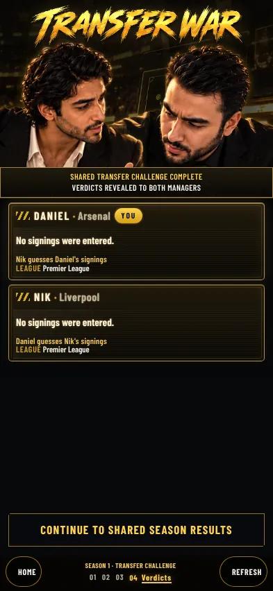
transfer-challenge--verdicts-phone-393x852.webp

transfer-challenge--verdicts-phone-393x852.webp
Season Results · Phone 393x852
No pixel difference between before and after at this size.

season-results-phone-393x852.webp

season-results-phone-393x852.webp
Season Results · Phone 393x852 · Review and actions · scrolled to bottom
No pixel difference between before and after at this size.

season-results--bottom-phone-393x852.webp

season-results--bottom-phone-393x852.webp
Standings · Phone 393x852
Same content and layout observed. Minor text/animation rendering pixels differ; these pictures do not establish a product change.
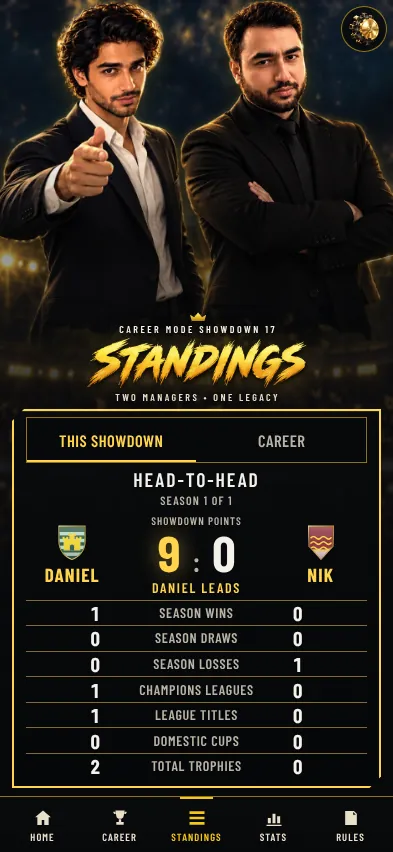
standings-phone-393x852.webp

standings-phone-393x852.webp
Standings · THIS SHOWDOWN mid-Showdown · Phone 393x852
Before stays on Loading standings with THIS SHOWDOWN disabled. After shows the committed 6–3 score, Season 2 of 3, and all seven standings rows from the same progression fixture.

standings-mid-showdown-phone-393x852.webp

standings-mid-showdown-phone-393x852.webp
Final Winner · Daniel · Phone 393x852
No pixel difference between before and after at this size.

final-winner-phone-393x852.webp

final-winner-phone-393x852.webp
Final Winner · Daniel · Phone 393x852 · Phone HONOURS tab
No pixel difference between before and after at this size.

final-winner--honours-phone-393x852.webp

final-winner--honours-phone-393x852.webp
Final Winner · Nik · Phone 393x852
No pixel difference between before and after at this size.

final-winner-nik-phone-393x852.webp
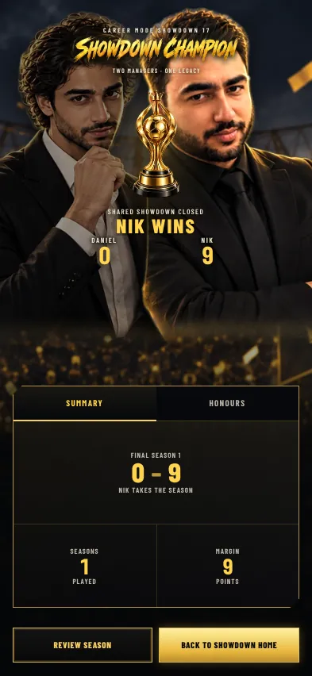
final-winner-nik-phone-393x852.webp
Final Winner · Draw · Phone 393x852
No pixel difference between before and after at this size.
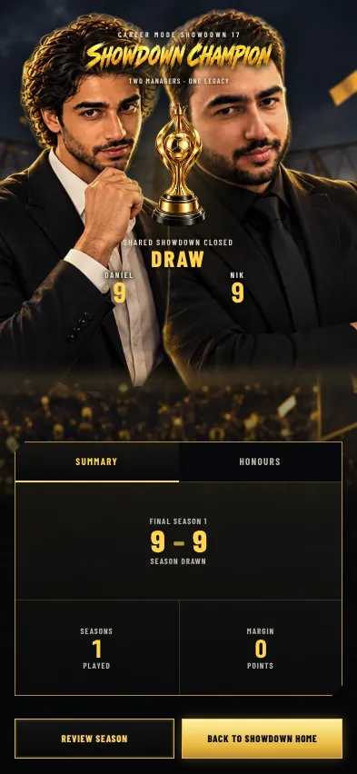
final-winner-draw-phone-393x852.webp

final-winner-draw-phone-393x852.webp
Final Winner · Completion pending · Phone 393x852
No pixel difference between before and after at this size.
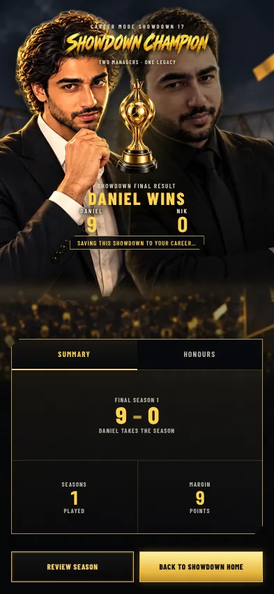
final-winner-pending-phone-393x852.webp

final-winner-pending-phone-393x852.webp
Champion · REVIEW SEASON exit · Phone 393x852
This sequence first opens published Shared Results and then reaches Champion. Before hides REVIEW SEASON; after shows the exit beside BACK TO SHOWDOWN HOME.

champion-review-season-phone-393x852.webp
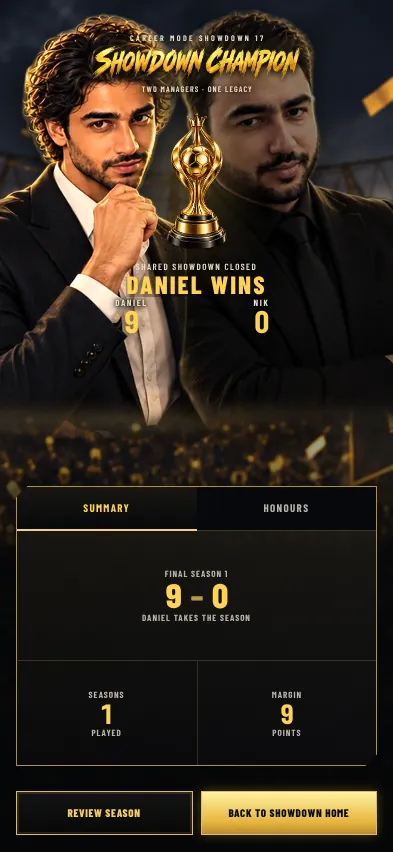
champion-review-season-phone-393x852.webp
Rivalry Statistics · mid-Showdown · Phone 393x852
Before stays on Loading rivalry statistics. After shows the committed 6–3 points and season counters without a cached History projection. Transfer Signings still reads Unavailable in this fixture.
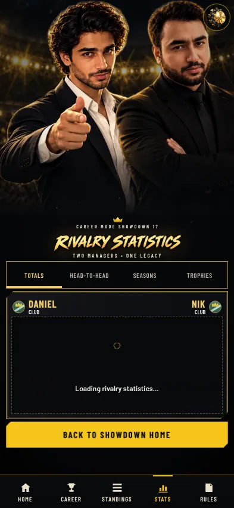
rivalry-mid-showdown-phone-393x852.webp
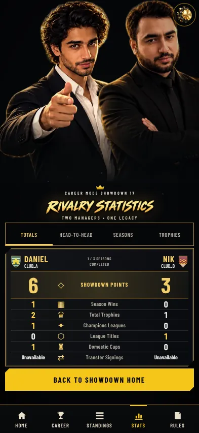
rivalry-mid-showdown-phone-393x852.webp
Rivalry Statistics · Phone 393x852
Same completed 9–0 rivalry fixture and figures. Minor rendering pixels differ; Transfer Signings is Unavailable because the fixture supplies no transfer summary.
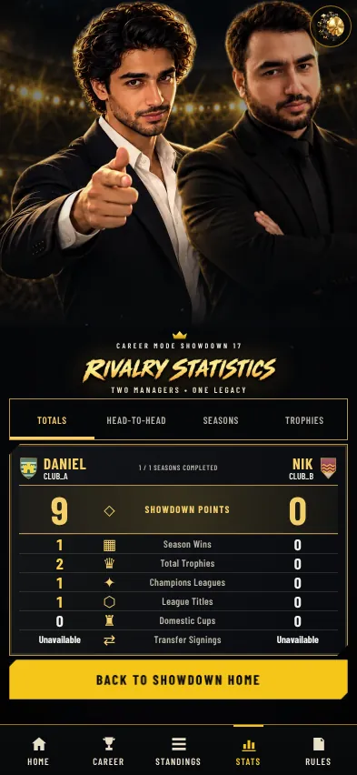
rivalry-phone-393x852.webp
rivalry-phone-393x852.webp
Legacy · Phone 393x852
Same content and layout observed. Minor text/animation rendering pixels differ; these pictures do not establish a product change.
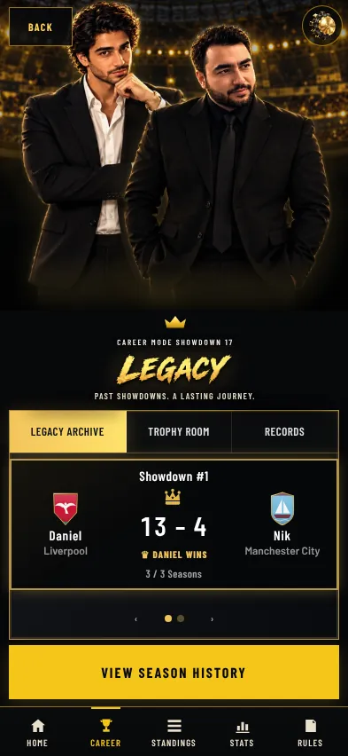
legacy-phone-393x852.webp

legacy-phone-393x852.webp
Trophy Room · Phone 393x852
Same content and layout observed. Minor text/animation rendering pixels differ; these pictures do not establish a product change.
trophy-room-phone-393x852.webp
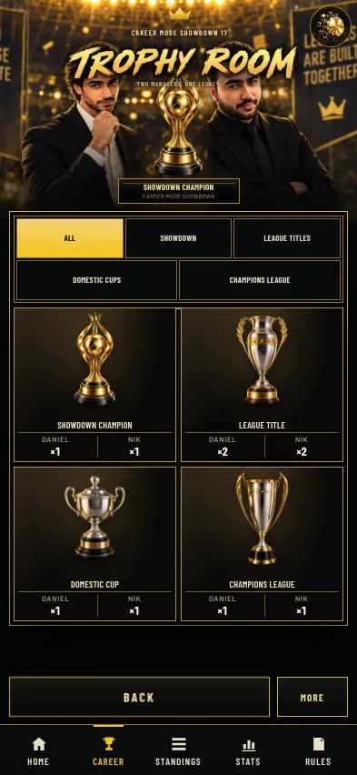
trophy-room-phone-393x852.webp
Trophy Room · Phone 393x852 · Phone MORE · Career details
Both show identical career ranks and all-time records from the multi-Showdown fixture. Opened by an actual coordinate touch on the visible MORE control in both versions; r75 label-targeted Playwright click is intercepted by its transparent checkbox.

trophy-room--more-phone-393x852.webp

trophy-room--more-phone-393x852.webp
Career Statistics · rivalry button · Phone 393x852
After adds CURRENT RIVALRY STATISTICS for this completed-career fixture without a local active Showdown. The career figures are unchanged.
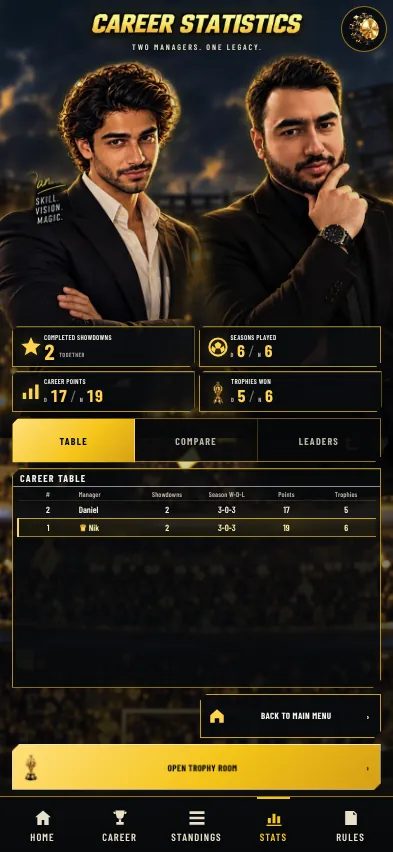
career-stats-phone-393x852.webp

career-stats-phone-393x852.webp
Rule Book · Phone 393x852
Same content and layout observed. Minor text/animation rendering pixels differ; these pictures do not establish a product change.
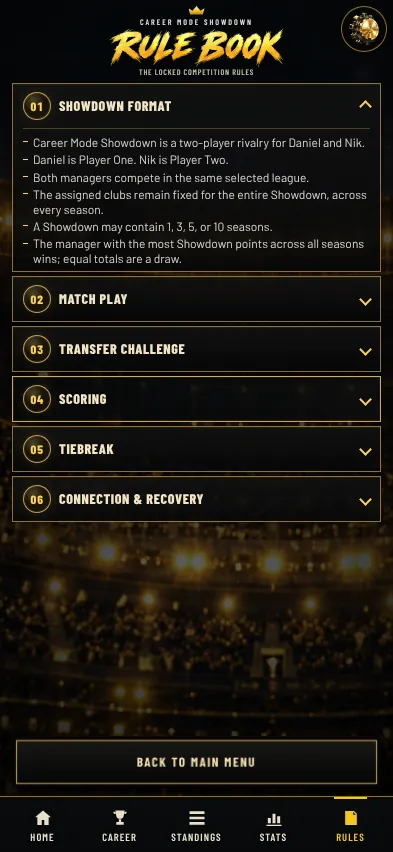
rule-book-phone-393x852.webp
rule-book-phone-393x852.webp
Settings · Phone 393x852
No pixel difference between before and after at this size.

settings-phone-393x852.webp

settings-phone-393x852.webp
Loading · Phone 393x852
Real startup splash held before app.js executes, at the requested viewport. Its blocked script request is intentional.

loading-phone-393x852.webp

loading-phone-393x852.webp
Home · free-limit message, zero taps · Phone 393x852
Quota is tripped locally with zero player taps. After shows the exact free-limit line immediately. Review concern: on phone, the notice covers the soundtrack controls.
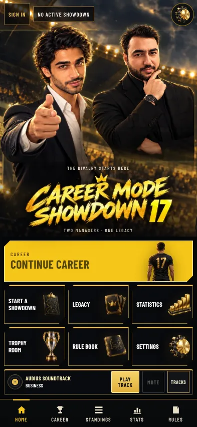
home-free-limit-phone-393x852.webp
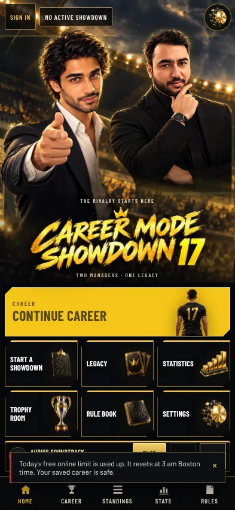
home-free-limit-phone-393x852.webp
Connect Players · free-limit message · Phone 393x852
The real pairing reader receives a local quota refusal and renders its free-limit message in both versions. After phone also exposes a clipped strip of the underlying Home runtime notice above the navigation bar.
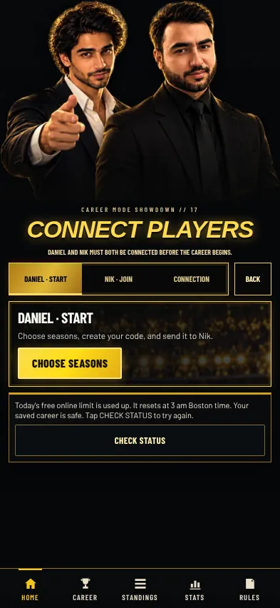
connect-players-free-limit-phone-393x852.webp
connect-players-free-limit-phone-393x852.webp